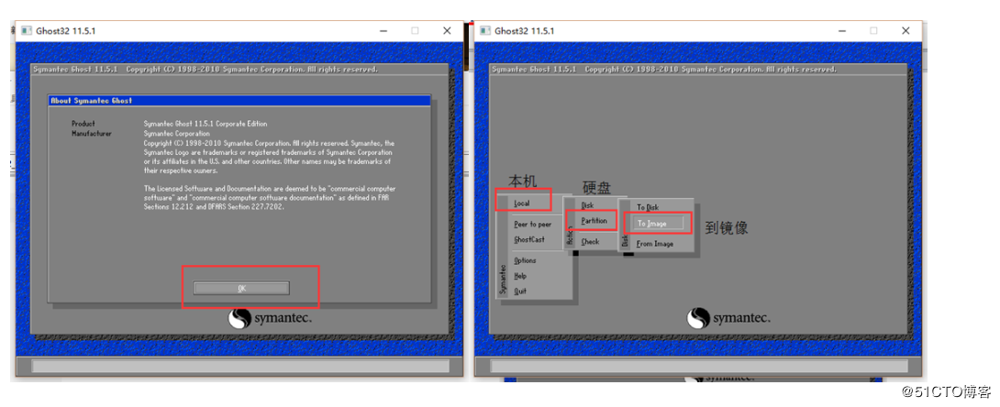
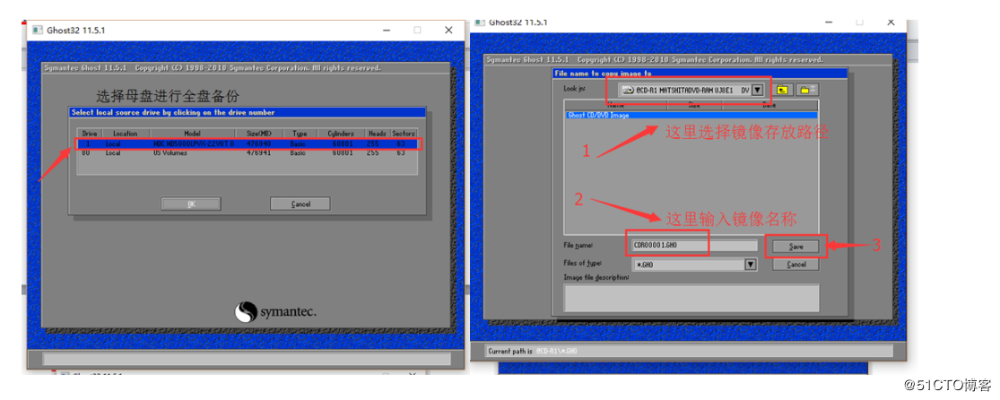
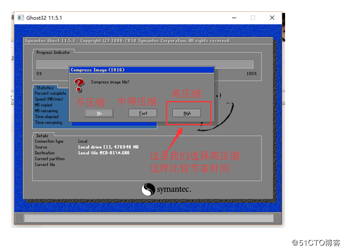
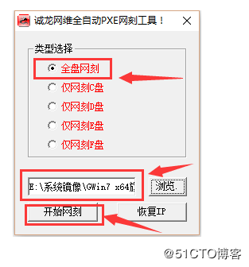
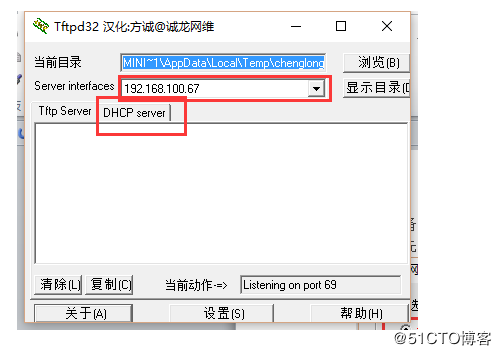
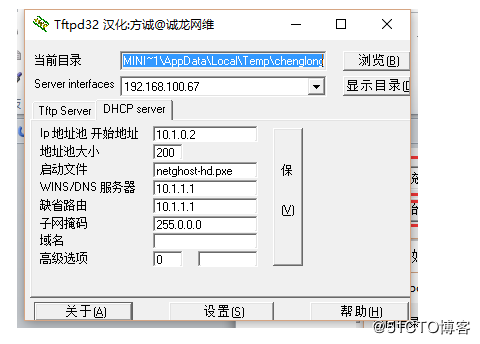
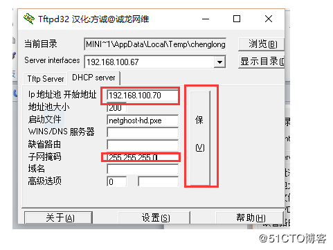
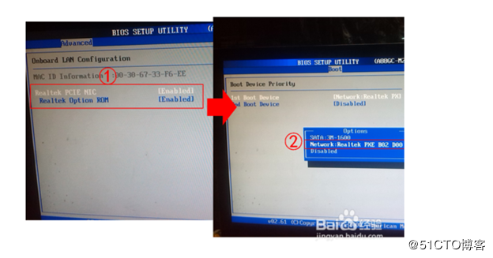
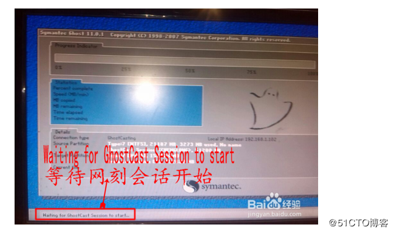
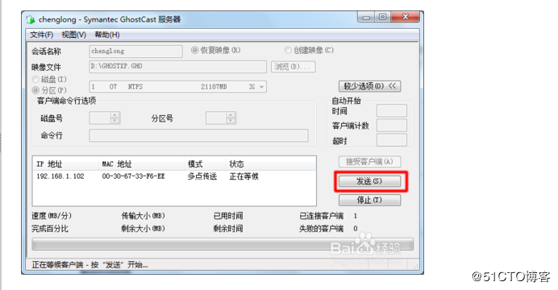

一、安装操作系统并备份成镜像文件
1.首先安装操作系统，然后使用ghost工具将母盘做一个全盘镜像备份。（选择disk to image）



2.镜像备份好后，就可以通过设置诚龙网刻工具来进行的网刻。
下载诚龙网刻工具 http://www.downxia.com/downinfo/32350.html
以管理员身份运行网刻工具前请提前准备好一个单独的网络交换机，并把需要做服务器的主机连在交换机上，单独接交换机主要是可以避免受局域网内的dhcp干扰。
ps:运行软件时需以管理员权限运行，不然会报无法初始化启动dhcp服务器。
1）.首先选择全盘克隆

2）.设置好备份镜像路径后点击–开始网刻

3）.这里我们要选到本地连接的这块真实的物理网卡，选好网卡点击DHCP server按键

4）.将IP地址池改成与本地真实物理网卡相同的网段，然后点保存

二．设置客户机
（重启计算机进入BIOS设置，将第一启动项设置成从网络启动设即可）
1.接下来我们把需要安装系统的多台客户机，接在与网刻服务器连接的交换机上，在BIOS中设置PXE网络启动。BIOS版本众多，设置各不相同，能不能设置就看你的技术了，还要看主板支不支持PXE启动。如果是10年前的主板，不支持是有可能的

2.顺利的话就会进入到如图所示的状态。它也在等待，等待服务器点击“发送”

3.最后我们回到服务器，服务器早已感应到客户机的连接，并已通讯良久。就差手动点击“发送”了

4、正常情况下系统恢复完即可正常进入系统。
需要注意的事项：
克隆的时候如果选择全盘克隆，则客户机硬盘不需要分区。
如果选择克隆c盘则需要对客户机进行分区。
制作镜像的时候最好不要安装设备驱动，以免恢复后由于驱动不兼容导致无法进入系统。


Ctrl+Enter 发布
发布
取消